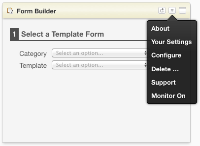
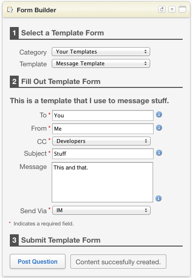
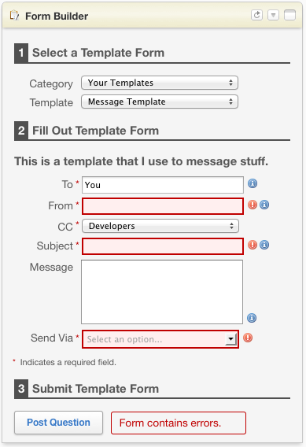
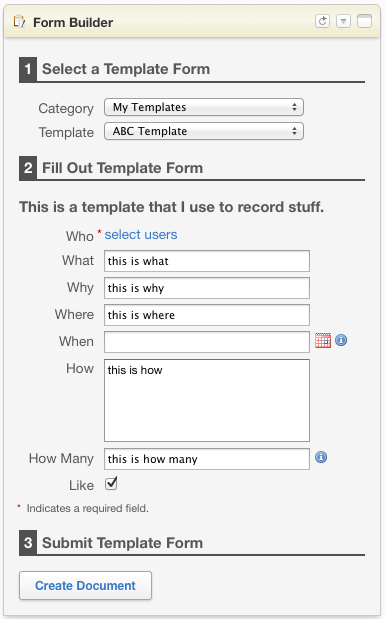

The purpose of this document is to describe the use of the Forms App.
The Forms app is designed to simplify the process of creating form-based, templated content within Jive. The same type of content, with a consistent structure and style, can easily be created time and time again in a consistent, reproducable way.
The app requires no custom content types and no other plugins, it simply leverages existing Jive content types (Documents, Discussions, Questions), and provides a semi-structured body for the content, based on form data input by the user.
Any number of templates can be created in any number of categories, and a single app can now be the place to generate just about any kind of content you can think of. Anything that can be created, manually, in Jive can also be created using the Forms app.
Select a help topic above for further information.
There are 5 options that can be configured for the app:
Here is how to configure the app preferences:
Step 1: Open the app menu and select "Your Settings"

Step 2: Enter the appropriate values and select "Save Settings"

Nothing needs to be done here, once the app is configured with the appropriate preferences (the default values for the preference may often suffice), it will automatically load and categorize all templates that are located by the search. The following loading screen will appear as the app is initializing and loading the templates:

Creating Jive content can now be created in 3 easy steps:
That's it. That's all you need to do in order to create customized content within Jive.
Step 1: Select a Template
The first step is to select a category and a template. Choose a category from the drop down list, which will then populate the list of templates for that category. Following the category selection, select one of the available templates from the Template drop down list.
Note: If only one single template is found when initially loading the templates, or if a default category and template is set in the app preferences, then that will already be selected here and the template form will be auto-generated when the app is loaded.

Step 2: Fill Out the Form
Once a template has been selected, a form will be created, dynamically, based on the template definition. For more information on how these templates are defined, see Forms App: Template Specification.
Note that if an item as a next to it, you may mouse over the to display a helpful tooltip describing the purpose and/or validation rules for the field.

Step 3: Submit the Form
Once the form has been successfully filled out (no validation errors - see below), then the following confirmation dialog will be display, and the form status at the bottom will be updated to reflect the same.
| Confirmation Dialog | Confirmation in Form |
 |
 |
Step 4: Success
If all goes well, you will now have a new piece of content created in Jive, based upon the provided template and the form values you have provided. Which may look something like the following:

When there is an error in a template definition, a form will not be displayed when the template is selected. Also note that the template will be listed in red with a  warning in the template drop down box. Rather than render the input form, a list of template validation errors will be displayed on the screen. Editing the template to fix the listed errors, re-saving the updated attachment on the appropriate document, and reloading the app should address the problem. Here is an example of a problematic template:
warning in the template drop down box. Rather than render the input form, a list of template validation errors will be displayed on the screen. Editing the template to fix the listed errors, re-saving the updated attachment on the appropriate document, and reloading the app should address the problem. Here is an example of a problematic template:

When there is an error in an input form (required field is missing, does not match validation rules, etc.) then individual form errors will be displayed. The field will become highlighted with a red border and a indicator will show next to each problematic field. Simply update each problematic field with an appropriate value and re-submit the form. The form will automatically refresh to show which, if any errors are resolved. If all errors have been resolved, then the form will submit and the content will be created.
Note: Hovering your mouse over the indicator will show a helpful tooltip describing the problem with the field's value.

One of the allowable data types for a field is a date. When a date is the defined type, a date picker will be displayed with the field, see the following example:

Another allowable data type for a field is a user. When a user is the defined type, a user picker (Jive-provided) will be displayed, see the following example:
| User Picker Before User Selection |
User Picker After User Selection |
|  |  |
‣ Ask Question, Submit Issues, and Provide Feedback here: Forms App Group
‣ See Forms App: Template Specification to see how templates are created.
‣ See Forms App: Sample Templates to see a few example templates.